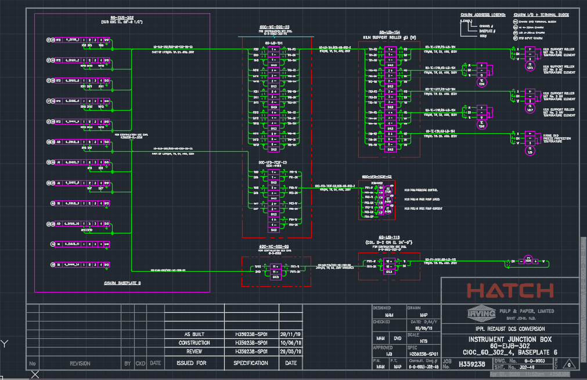
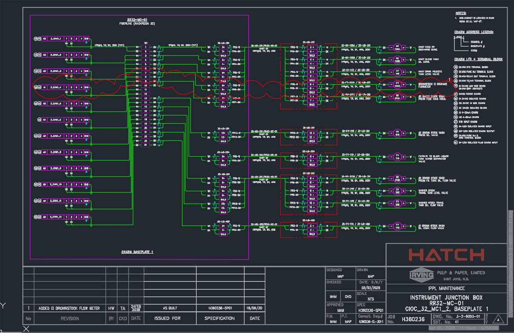
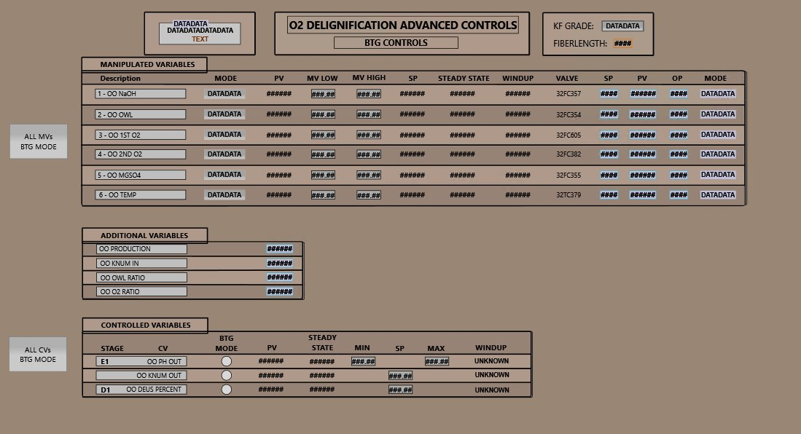
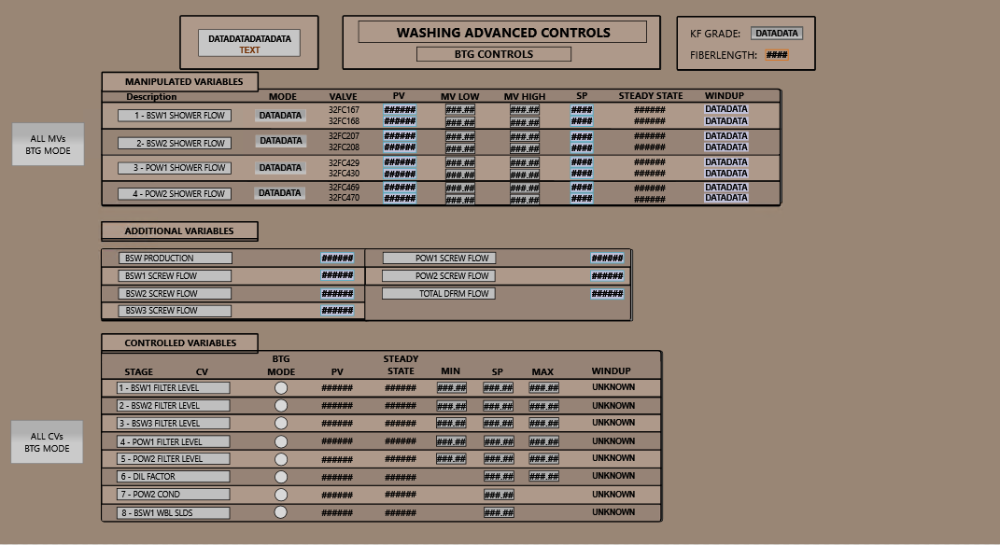

Electrical Engineering Student
For my first work term, I worked as an electrical engineering student at Irving Pulp and Paper. There, I worked in the Electrical & Instrumentation Reliability department, with project experience in the systems department. On the E&I reliability side, I completed work orders, ranging from equipment installation at the mill to preventative maintenance, control logic validation in the DCS, and mill improvement projects. I learned and employed AutoCAD to revise and create over 30 industrial loop diagrams, single line diagrams, and P&IDs to maintain engineering document accuracy. I supported instrumentation documentation by mapping and updating I/O paths in DeltaV during new equipment installations. Additionally, I assembled 120 Motorola radios and wrote documentation to be used by the electrical and mechanical maintenance crews, as the mill was moving away from the pager system it previously used for communication. Before the end of my work term, I also wrote documentation for the HoloLens 2 by Microsoft.


In the systems department, I contributed to the implementation and optimization of Advanced Process Control (APC) systems for the washing and O2 Delignification processes at the Irving Pulp Mill. The HMIs displaying live information from the DCS would enable improved process monitoring, automated setpoint adjustments, and enhanced operator control visibility. I worked with the DeltaV Distributed Control System (DCS), in particular using DeltaV Graphics Studio to build the graphic, DeltaV Live to display the finished product, and DeltaV Explorer + Control Studio to create and test the control logic. While this project was started in 2023 by mill personnel, I took over the rest of the project.
To start, this project involved developing and refining operator-facing supervisory displays for manipulated variables (MVs), controlled variables (CVs), and feed-forward variables. DeltaV Graphics Studio is where all the HMIs used by operators are built. However, to configure all the necessary MVs and CVs into the HMI, the modules first needed to be created in DeltaV Explorer and Control Studio. Using the Functional Specification Document provided by BTG, I helped supported implementation of key features necessary for the HMI graphics, such as the MV and CV permissive logic that would be used to coordinate APC setpoint writing and predictive control calculations. Once the MV and CV modules were made in DeltaV Explorer and the permissive logic was written in DeltaV Control Studio, I linked all 112 MVs and 120 CVs to the appropriate GEM (Graphical Element) in DeltaV Graphics Studio to begin building the operator graphic, as the GEMs would be used to display live data to operators. To verify the watchdog logic for OPC communication monitoring worked and automatically fell back to operator control during communication loss (no communication for 5 minutes or more), I simluated tests using DeltaV Control Studio On-Line and debugging mode. To improve operator awareness of process limitations and controller constraints, I created named sets in DeltaV Explorer that were linked to the 4 windup variable states (showing to the operators as either "HI", "LO", "OK", or "BOTH"). The status of the windup variables directly correlated to the control valves and would indicate whether the corresponding control valve was at a limit and couldn't be moved further in a direction. Finally, I configured the BTG Mode Buttons on the HMI, as it would control whether the variables were being written to by the controller (MACS) or by the operator/DCS.


This project strengthened my understanding of industrial automation, process control architecture, APC implementation strategies, device communication through OPC servers, and safe control system integration within a large-scale pulp manufacturing environment.